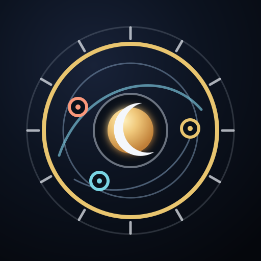

OrlojŽivá obloha ↗Osobní observatoř času
Osobní Orloj
Obloha, symboly a souvislosti osobní mapy.
Planety osobní mapy
Polohy podle předlohyDalší body mapy
Hlavní vazby vaší mapy
Symbolické čteníJak číst symboly a orb
Aspekt je úhlová vzdálenost mezi dvěma body mapy. Orb označuje odchylku od přesného úhlu: menší číslo znamená přesnější vazbu, nikoli jistější výklad.
- ☌ Konjunkce · 0°
- Spojení
- ✶ Sextil · 60°
- Příležitost
- □ Kvadratura · 90°
- Napětí a výzva
- △ Trigon · 120°
- Soulad
- ☍ Opozice · 180°
- Dva póly
Slovní významy jsou astrologická symbolika. Znak ≈ připomíná, že poloha z předlohy je orientační a přesnost orbu je tím omezená.
Všechny hlavní aspekty
Obloha právě teď
Dnešní vazby k osobní mapě
Otevřít celý Profil dne →O této ukázce
Mapa vychází z poloh na předloze. Symbol ≈ označuje orientační údaje. Aspekty jsou vypočítané z uvedených poloh; čtení nabízí astrologické podněty k zamyšlení. Domy, přesné tranzitní termíny a osobní čísla vyžadují potvrzené údaje narození.
Čínský rok je v této ukázce odvozený z poloh planet a není potvrzeným údajem narození.
Ukázka neukládá ani nepřepisuje osobní profil v tomto zařízení.
Čínský cyklus: Hong Kong Observatory. Nebeské kmeny: tabulka kmenů a větví.